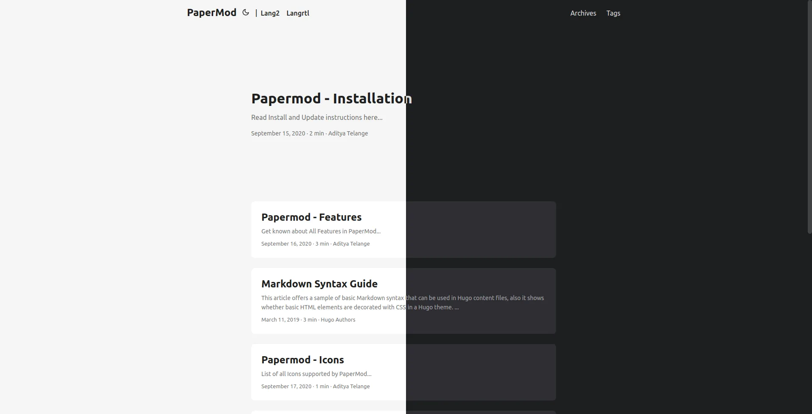
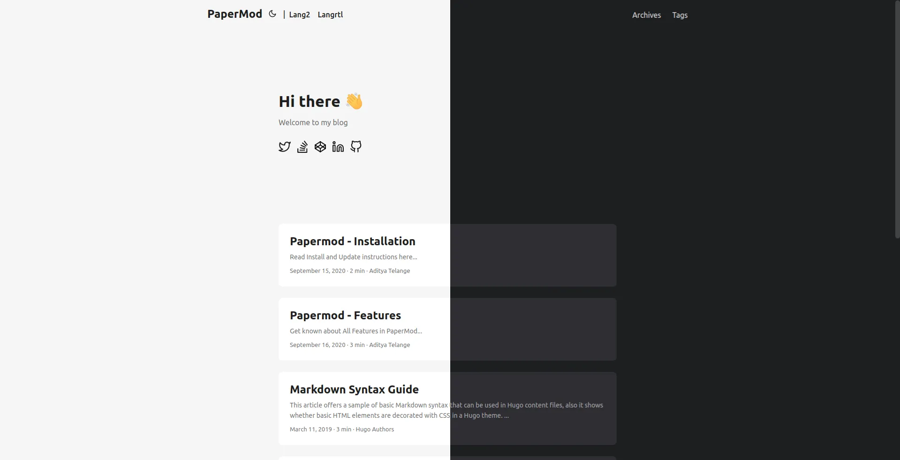
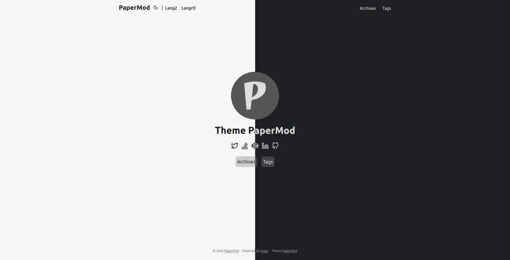

Assets (js/css)
The following is enabled by default
- minification - makes the assets size smallest as possible.
- bundling - bundles all the styles in one single asset
- fingerprint/intergity check.
Default Theme light/dark/auto
params:
# defaultTheme: light
# defaultTheme: dark
defaultTheme: auto # to switch between dark or light according to browser theme
Theme Switch Toggle (enabled by default)
Shows icon besides title of page to change theme
To disable it :
disableThemeToggle: true
You can refer following table for better understanding…
defaultTheme |
disableThemeToggle |
checks local storage? | checks system theme? | Info |
|---|---|---|---|---|
auto |
true | No | Yes | only system theme |
| false | Yes (if not->2) | Yes (2) | switch present | |
dark |
true | No | No | force dark only |
| false | Yes | No | switch present | |
light |
true | No | No | force light only |
| false | Yes | No | switch present |
Archives Layout
Create a page with archive.md in content directory with following content
---
title: "Archive" # in any language you want
layout: "archives" # is necessary
url: "/archive"
summary: "archive"
---
Note: Archives Layout does not support Multilingual Month Translations.
ex: archives.md
Regular Mode (default-mode)

Home-Info Mode

Use 1st entry as some Information
add following to config file
params:
homeInfoParams:
Title: Hi there wave
Content: Can be Info, links, about...
socialIcons: # optional
- name: "<platform>"
url: "<link>"
- name: "<platform 2>"
url: "<link2>"
ex. config.yml#L106
Profile Mode

Shows Index/Home page as Full Page with Social Links and Image
add following to config file
params:
profileMode:
enabled: true
title: "<Title>" # optional default will be site title
imageUrl: "<image link>" # optional
imageTitle: "<title of image as alt>" # optional
imageWidth: 120 # custom size
imageHeight: 120 # custom size
buttons:
- name: Archive
url: "/archive"
- name: Github
url: "https://github.com/"
socialIcons: # optional
- name: "<platform>"
url: "<link>"
- name: "<platform 2>"
url: "<link2>"
Search
Add the following to site config, config.yml
outputs:
home:
- HTML
- RSS
- JSON # is necessary
Create a page with search.md in content directory with following content
---
title: "Search" # in any language you want
layout: "search" # is necessary
# url: "/archive"
summary: "search"
---
For Multilingual use search.<lang>.md ex. search.es.md.
Note: Search will work only on current language, user is currently on !
Customizing Fusejs Options
Refer https://fusejs.io/api/options.html for Options, Add those as shown below.
params:
fuseOpts:
isCaseSensitive: false
shouldSort: true
location: 0
distance: 1000
threshold: 0.4
minMatchCharLength: 0
keys: ["title", "permalink", "summary", "content"]
ex: search.md
Draft Page indication
adds [draft] mark to indicate draft pages.
Post Cover Image
In post’s page-variables add :
cover:
image: "<image path/url>"
# can also paste direct link from external site
# ex. https://i.ibb.co/K0HVPBd/paper-mod-profilemode.png
alt: "<alt text>"
caption: "<text>"
relative: false # To use relative path for cover image, used in hugo Page-bundles
When you include images in the Page Bundle, multiple sizes of the image will automatically be provided using the HTML5 srcset field.
To reduce generation time and size of the site, you can disable this feature using
params:
cover:
responsiveImages: false
To enable hyperlinks to the full image size on post pages, use
params:
cover:
linkFullImages: true
Share Buttons on post
Displays Share Buttons at Bottom of each post
to show share buttons add
params:
ShowShareButtons: true
Show post reading time
Displays Reading Time (the estimated time, in minutes, it takes to read the content.)
To show reading time add
Params:
ShowReadingTime: true
Show Table of Contents (Toc) on blog post
Displays ToC on blog-pages
To show ToC add following to page-variables
ShowToc: true
To keep Toc Open by default on a post add following to page-variables:
TocOpen: true
Multiple Authors
To Use multiple authors for a post, in post-variables:
---
author: ["Me", "You"]
---
To use Multiple Authors Site-wide, in config.yml:
params:
author: ["Me", "You"]
Comments
to add comments, create a html file
layouts/partials/comments.html
and paste code provided by your comments provider
also in config add this
params:
comments: true
read more about this hugo-comments
AccessKeys
c - ToC Open/Close
g - Go To Top
h - Home (according to current lang)
t - Theme toggle
/ - Jumps to search page if in menu
Enhanced SEO
Enabled only when env: production
-
Twitter Cards Support
-
Open-Graph support
Multilingual Support
Misc
Scroll-Bar themed (by default)
Smooth Scroll between in-page links (by default)
Scroll-to-Top Button (by default)
Displays a Scroll-to-Top button in right-bottom corner